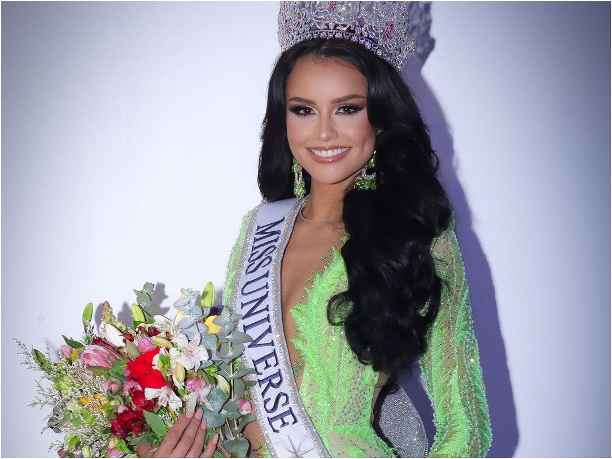
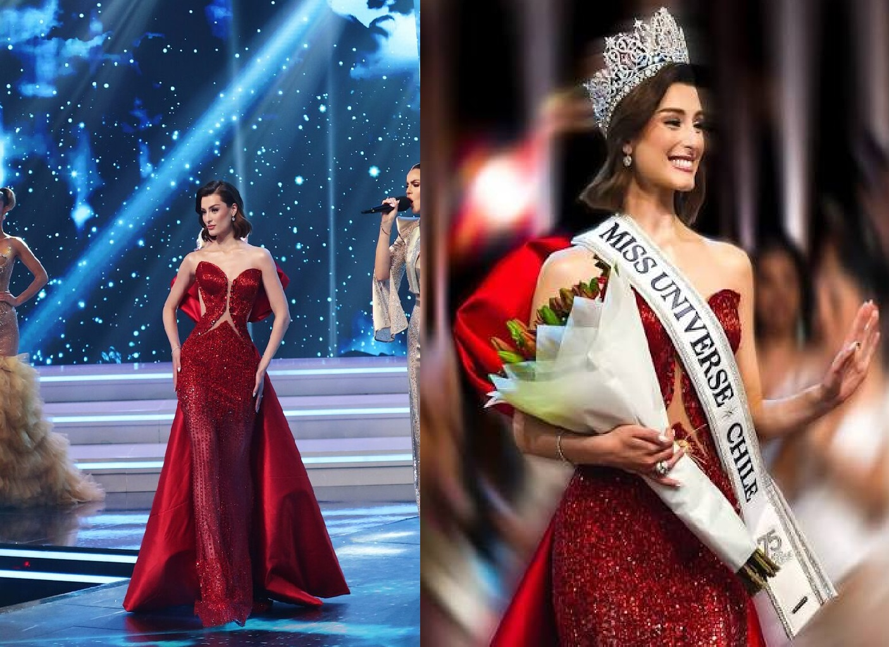

Miss Universo es el certamen de belleza más prestigioso del planeta. Cada año, mujeres de más de 80 países compiten no solo por la corona, sino por representar valores de liderazgo, inteligencia y elegancia.
Hija del animador Felipe Viel y de Paula Caballero (Miss Mundo Chile 1992). Nacida en Miami, representó a Chile con distinción y elegancia.
Conocida artísticamente como Emi D, Emilia combinó talento musical, carisma y una presencia escénica impecable.

María Ignacia Moll Bilbao demostró que el avance de Chile no fue casualidad, sino el resultado de una nueva generación de talentos.
A sus 24 años, Dominga López asume el legado de las últimas tres reinas con la misión más ambiciosa: traer la segunda corona a Chile.
